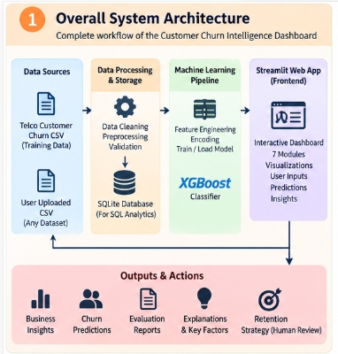
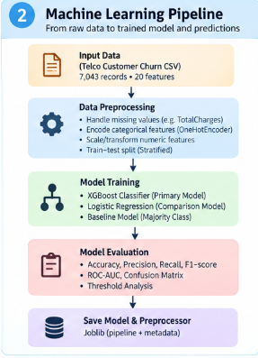
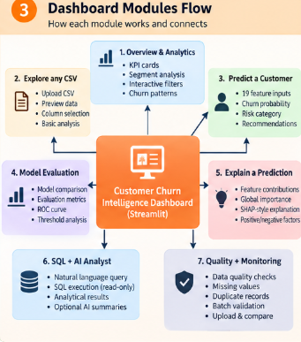
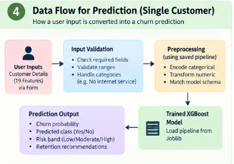
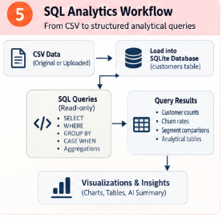
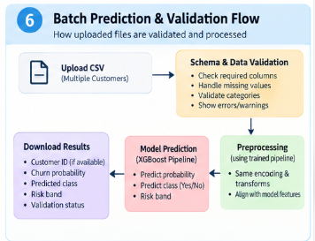

Customer Churn Intelligence · Project walkthrough
System and workflow diagrams
Explore how customer records move through validation, SQL analytics, model training and prediction, explainability, and dashboard review.
← Back to Customer Churn Intelligence project details01 · SYSTEM ARCHITECTURE
CSV, local analytics, machine learning, and dashboard

02 · MODEL WORKFLOW
From customer data to evaluated model

03 · APPLICATION MODULES
One dashboard, connected analysis tools

04 · INDIVIDUAL PREDICTION
Customer profile to estimated churn risk

05 · SQL ANALYTICS
Read-only questions over local SQLite data

06 · BATCH VALIDATION
Validate uploaded records before batch scoring

Model estimates and suggested actions support analysis and require human review; they do not guarantee future customer behavior.